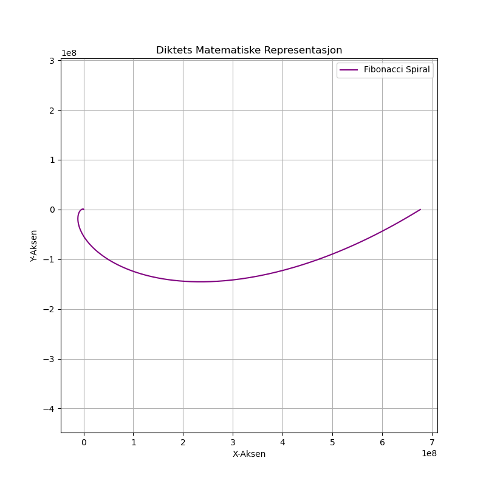

Dagens dikt
Under stjerneskinnets milde lys,
Der tallene danser, i harmoniens pris.
Fibonacci spiralens uendelige sløyfe,
Hver kurve en skjønnhet, en matematisk trøye.
Fra gulvet til himmelen, oppad i sin vei,
En rekke skyggefulle verdier, fylt av deg.
Så la oss tegne mønstre, i et univers med farger,
En evig sirkel, i stående sammenhenger lager.

Kode
import numpy as np
import matplotlib.pyplot as plt
# Fibonacci spiral-inspired function
def fibonacci_spiral(theta):
phi = (1 + np.sqrt(5)) / 2 # Golden ratio
return np.exp(phi * theta) # Exponential scaling with golden ratio
# Generate theta values
theta = np.linspace(0, 4 * np.pi, 1000) # From 0 to 4 * pi radians
# Compute radius of the spiral
radius = fibonacci_spiral(theta)
# Convert polar to Cartesian coordinates
x = radius * np.cos(theta)
y = radius * np.sin(theta)
# Plot the Fibonacci spiral
plt.figure(figsize=(8, 8))
plt.plot(x, y, color="purple", label="Fibonacci Spiral")
plt.title("Diktets Matematiske Representasjon")
plt.xlabel("X-Aksen")
plt.ylabel("Y-Aksen")
plt.legend()
plt.grid()
plt.axis("equal")
plt.savefig('2025-03-20-20-01-35.png')